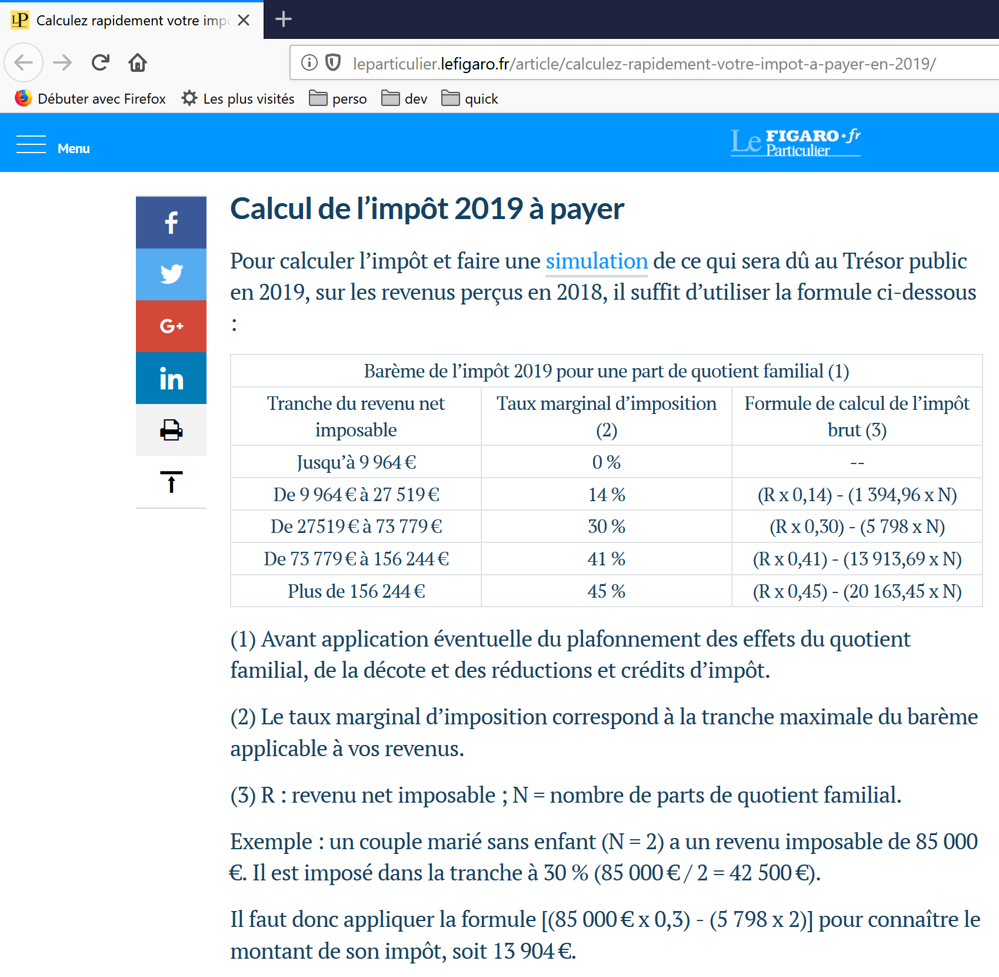
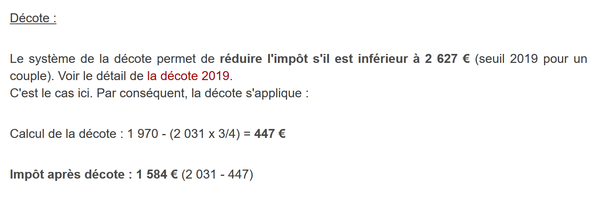
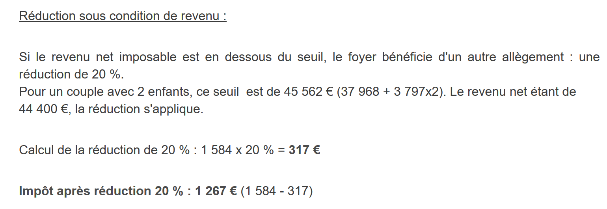

4. Exercice d'application – versions 1 et 2
4.1. Le problème

Le tableau ci-dessus permet de calculer l'impôt dans le cas simplifié d'un contribuable n'ayant que son seul salaire à déclarer. Comme l'indique la note (1), l'impôt ainsi calculé est l'impôt avant trois mécanismes :
- le plafonnement du quotient familial qui intervient pour les hauts revenus ;
- la décote et la réduction d'impôts qui interviennent pour les faibles revenus .
Ainsi le calcul de l'impôt comprend les étapes suivantes [http://impotsurlerevenu.org/comprendre-le-calcul-de-l-impot/1217-calcul-de-l-impot-2019.php] :

On se propose d'écrire un programme permettant de calculer l'impôt d'un contribuable dans le cas simplifié d'un contribuable n'ayant que son seul salaire à déclarer. Les règles utilisées sont celles de l'impôt 2019 sur les revenus 2018. Elles serviront de fil rouge à tout le document : l'algorithme restera le même d'une version à l'autre de l'application, seule son architecture changera.
4.1.1. Calcul de l'impôt brut
L'impôt brut peut être calculé de la façon suivante.
On calcule d'abord le nombre de parts du contribuable :
- chaque parent amène 1 part ;
- les deux premiers enfants amènent chacun 1/2 part ;
- les enfants suivants amènent une part chacun .
Le nombre de parts est donc :
- nbParts=1+nbEnfants*0,5+(nbEnfants-2)*0,5 si le salarié n'est pas marié ;
- nbParts=2+nbEnfants*0,5+(nbEnfants-2)*0,5 s'il est marié ;
où nbEnfants est son nombre d'enfants, le terme (nbEnfants-2)*0,5 n'intervenant qu'à partir de 3 enfants. Ensuite :
- on calcule le revenu imposable R=0.9*S où S est le salaire annuel ;
- on calcule le quotient familial QF=R/nbParts ;
- on calcule l'impôt brut I d'après les données suivantes (2019) :
champ1 (limite de QF) | champ2 (coeffR) | champ3 (coeffN) |
9964 | 0 | 0 |
27519 | 0.14 | 1394.96 |
73779 | 0.3 | 5798 |
156244 | 0.41 | 13913.69 |
0 | 0.45 | 20163.45 |
Chaque ligne a 3 champs : champ1, champ2, champ3. Pour calculer l'impôt I, on recherche la première ligne où QF<=champ1 et on prend les valeurs de cette ligne. Par exemple, pour un salarié marié avec deux enfants et un salaire annuel S de 50000 euros :
- revenu imposable : R=0,9*S=45000 ;
- nombre de parts : nbParts=2+2*0,5=3 ;
- quotient familial : QF=45000/3=15000 .
La 1re ligne où QF<=champ1 est la suivante :
L'impôt I est alors égal à 0.14*R – 1394,96*nbParts=[0,14*45000-1394,96*3]=2115. L'impôt est arrondi à l'euro inférieur.
Si la relation QF<=champ1 est vérifiée dès la 1re ligne, alors l'impôt est nul.
Si QF est tel que la relation QF<=champ1 n'est jamais vérifiée, alors ce sont les coefficients de la dernière ligne qui sont utilisés. Ici :
ce qui donne l'impôt brut I=0.45*R – 20163,45*nbParts.
4.1.2. Plafonnement du quotient familial

Pour savoir si le plafonnement du quotient familial QF s'applique, on refait le calcul de l'impôt brut sans les enfants. Toujours pour le salarié marié avec deux enfants et un salaire annuel S de 50000 euros :
- revenu imposable : R=0,9*S=45000 ;
- nombre de parts : nbParts=2 (on ne compte plus les enfants) ;
- quotient familial : QF=45000/2=22500 .
La 1re ligne où QF<=champ1 est la suivante :
L'impôt I est alors égal à 0.14*R – 1394,96*nbParts=[0,14*45000-1394,96*2]=3510.
- gain maximal lié aux enfants : 1551 * 2 = 3102 euros ;
- impôt minimal : 3510-3102 = 408 euros .
L'impôt brut avec 3 parts déjà calculé, 2115 euros, est supérieur à l'impôt minimal de 408 euros, donc le plafonnement familial ne s'applique pas ici.
De façon générale, l'impôt brut est sup(impôt1, impôt2) où :
- [impôt1] : est l'impôt brut calculé avec les enfants ;
- [impôt2] : est l'impôt brut calculé sans les enfants et diminué du gain maximal (ici 1551 euros par demi-part) lié aux enfants .
4.1.3. Calcul de la décote

Toujours pour le salarié marié avec deux enfants et un salaire annuel S de 50000 euros :
L'impôt brut (2115) issu de l'étape précédente est inférieur à 2627 euros pour un couple (1595 euros pour un célibataire) : la décote s'applique donc. Elle est obtenue avec le calcul suivant :
- décote = seuil (couple=1970 / célibataire=1196) - 0,75 * impôt brut ;
- décote = 1970-0,75*2115 = 383,75 arrondi à 384 euros ;
- nouvel impôt brut = 2115-384 = 1731 euros .
4.1.4. Calcul de la réduction d'impôts

Au-dessous d'un certain seuil, une réduction de 20 % est faite sur l'impôt brut issu des calculs précédents. En 2019, les seuils sont les suivants :
- célibataire : 21037 euros ;
- couple : 42074 euros (le chiffre 37968 utilisé dans l'exemple ci-dessus semble erroné) .
Ce seuil est augmenté de la valeur : 3797 * (nombre de demi-parts amenées par les enfants).
Toujours pour le salarié marié avec deux enfants et un salaire annuel S de 50000 euros :
- son revenu imposable (45000 euros) est inférieur au seuil (42074+2*3797)=49668 euros ;
- il a donc droit à une réduction de 20 % de son impôt : 1731 * 0,2 = 346,2 euros arrondi à 347 euros ;
- l'impôt brut du contribuable devient : 1731-347 = 1384 euros .
4.1.5. Calcul de l'impôt net
Notre calcul s'arrêtera là : l'impôt net à payer sera de 1384 euros. Dans la réalité, le contribuable peut bénéficier d'autres réductions, notamment pour des dons à des organismes d'intérêt public ou général.
4.1.6. Cas des hauts revenus
Notre exemple précédent correspond à la majorité des cas de salariés. Cependant le calcul de l'impôt est différent dans le cas des hauts revenus.
4.1.6.1. Plafonnement de la réduction de 10 % sur les revenus annuels
Dans la plupart des cas, le revenu imposable est obtenu par la formule : R=0,9*S où S est le salaire annuel. On appelle cela la réduction des 10 %. Cette réduction est plafonnée. En 2019 :
- elle ne peut être supérieure à 12502 euros ;
- elle ne peut être inférieure à 437 euros .
Prenons le cas d'un salarié non marié sans enfants et un salaire annuel de 200000 euros :
- la réduction de 10 % est de 20000 euros > 12502 euros. Elle est donc ramenée à 12502 euros .
4.1.6.2. Plafonnement du quotient familial
Prenons un cas où le plafonnement familial présenté au paragraphe « Plafonnement du quotient familial » ci-dessus intervient : un couple avec trois enfants et des revenus annuels de 100000 euros. Reprenons les étapes du calcul :
- l'abattement de 10 % est de 10000 euros < 12502 euros. Le revenu imposable R est donc 100000-10000=90000 euros ;
- le couple a nbParts=2+0,5*2+1=4 parts ;
- son quotient familial est donc QF=R/nbParts=90000/4=22500 euros ;
- son impôt brut I1 avec enfants est I1=0,14*90000-1394,96*4=7020 euros ;
- son impôt brut I2 sans enfants :
- QF=90000/2=45000 euros ;
- I2=0,3*90000-5798*2=15404 euros ;
- la règle du plafonnement du quotient familial dit que le gain amené par les enfants ne peut dépasser (1551*4 demi-parts)=6204 euros. Or ici, il est I2-I1=15404-7020=8384 euros, donc supérieur à 6204 euros ;
- l'impôt brut est donc recalculé comme I3=I2-6204=15404-6204=9200 euros .
Ce couple n'aura ni décote, ni réduction et son impôt final sera de 9200 euros.
4.1.7. Chiffres officiels
Le calcul de l'impôt est complexe. Tout au long du document, les tests seront faits avec les exemples suivants. Les résultats officiels sont ceux du simulateur de l'administration fiscale de 2019 [https://www3.impots.gouv.fr/simulateur/calcul_impot/2019/simplifie/index.htm] :
Contribuable | Résultats officiels | Résultats de l'algorithme du document |
Couple avec 2 enfants et des revenus annuels de 55555 euros | Impôt=2815 euros Taux d'imposition=14 % | Impôt=2814 euros Taux d'imposition=14 % |
Couple avec 2 enfants et des revenus annuels de 50000 euros | Impôt=1385 euros Décote=384 euros Réduction=346 euros Taux d'imposition=14 % | Impôt=1384 euros Décote=384 euros Réduction=347 euros Taux d'imposition=14 % |
Couple avec 3 enfants et des revenus annuels de 50000 euros | Impôt=0 euro Décote=720 euros Réduction=0 euro Taux d'imposition=14 % | Impôt=0 euro Décote=720 euros Réduction=0 euro Taux d'imposition=14 % |
Célibataire avec 2 enfants et des revenus annuels de 100000 euros | Impôt=19884 euros Décote=0 euro Réduction=0 euro Taux d'imposition=41 % | Impôt=19884 euros Surcôte=4480 euros Décote=0 euro Réduction=0 euro Taux d'imposition=41 % |
Célibataire avec 3 enfants et des revenus annuels de 100000 euros | Impôt=16782 euros Décote=0 euro Réduction=0 euro Taux d'imposition=41 % | Impôt=16782 euros Surcôte=7176 euros Décote=0 euro Réduction=0 euro Taux d'imposition=41 % |
Couple avec 3 enfants et des revenus annuels de 100000 euros | Impôt=9200 euros Décote=0 euro Réduction=0 euro Taux d'imposition=30 % | Impôt=9200 euros Surcôte=2180 euros Décote=0 euro Réduction=0 euro Taux d'imposition=30 % |
Couple avec 5 enfants et des revenus annuels de 100000 euros | Impôt=4230 euros Décote=0 euro Réduction=0 euro Taux d'imposition=14 % | Impôt=4230 euros Décote=0 euro Réduction=0 euro Taux d'imposition=14 % |
Célibataire sans enfants et des revenus annuels de 100000 euros | Impôt=22986 euros Décote=0 euro Réduction=0 euro Taux d'imposition=41 % | Impôt=22986 euros Surcôte=0 euro Décote=0 euro Réduction=0 euro Taux d'imposition=41 % |
Couple avec 2 enfants et des revenus annuels de 30000 euros | Impôt=0 euro Décote=0 euro Réduction=0 euro Taux d'imposition=0 % | Impôt=0 euro Décote=0 euro Réduction=0 euro Taux d'imposition=0 % |
Célibataire sans enfants et des revenus annuels de 200000 euros | Impôt=64211 euros Décote=0 euro Réduction=0 euro Taux d'imposition=45 % | Impôt=64210 euros Surcôte=7498 euros Décote=0 euro Réduction=0 euro Taux d'imposition=45 % |
Couple avec 3 enfants et des revenus annuels de 200000 euros | Impôt=42843 euros Décote=0 euro Réduction=0 euro Taux d'imposition=41 % | Impôt=42842 euros Surcôte=17283 euros Décote=0 euro Réduction=0 euro Taux d'imposition=41 % |
Ci-dessus, on appelle surcôte ce que paient en plus les hauts revenus à cause de deux phénomènes :
- le plafonnement de l'abattement de 10 % sur les revenus annuels ;
- le plafonnement du quotient familial .
Cet indicateur n'a pu être vérifié car le simulateur de l'administration fiscale ne le donne pas.
On voit que l'algorithme du document donne un impôt juste à chaque fois, avec cependant une marge d'erreur de 1 euro. Cette marge d'erreur provient des arrondis. Toutes les sommes d'argent sont arrondies parfois à l'euro supérieur, parfois à l'euro inférieur. Les règles officielles d'arrondi n'étant pas connues de l'auteur, les sommes d'argent de l'algorithme du document ont été arrondies :
- à l'euro supérieur pour les décotes et réductions ;
- à l'euro inférieur pour les surcôtes et l'impôt final .
Dans la suite, des tests seront établis pour vérifier la validité des résultats. Ils seront faits avec les exemples du tableau précédent avec une marge d'erreur acceptée de 1 euro.
4.2. L'arborescence des scripts
Les deux premières versions de l'application sont dans le dossier [scripts-console/impots] :
Le fichier [resultats-verifies.txt] rassemble, pour mémoire, les résultats obtenus avec le simulateur officiel pour les contribuables du fichier [taxpayersdata.txt].
4.3. Version 1
4.3.1. L'algorithme
Nous présentons un premier programme où :
- les données nécessaires au calcul de l'impôt sont codées en dur dans le code sous forme de tableaux et de constantes ;
- les données des contribuables (marié, enfants, salaire) sont dans un premier fichier texte [taxpayersdata.txt] ;
- les résultats du calcul de l'impôt (marié, enfants, salaire, impôt, …) sont mémorisés dans un second fichier texte [resultats.txt] .
Le fichier des données [taxpayersdata.txt] (marié, enfants, salaire) est le suivant :
Le programme principal du script [version-01/main.php] est le suivant :
Commentaires :
- ligne 4 : on force le respect strict du type des paramètres et des résultats des fonctions ;
- lignes 7-16 : définition de toutes les constantes nécessaires au calcul de l'impôt. Le mot clé [const] définit une constante globale, connue de tout le script, y compris à l'intérieur des fonctions. Le cours PHP 7 utilisait la fonction [define("PLAFOND_QF_DEMI_PART", 1551)], qui fait la même chose et existe toujours. [const] est plus lisible et permet à l'éditeur de vérifier les noms des constantes. Par convention, les noms des constantes sont en majuscules ;
- ligne 19 : le nom du fichier texte contenant les données des contribuables (marié, enfants, salaire) ;
- ligne 20 : le nom du fichier texte contenant les résultats du calcul de l'impôt ;
- lignes 21-23 : les trois tableaux des données définissant les différentes tranches d'imposition du calcul de l'impôt. Ce sont les trois colonnes du tableau du paragraphe « Calcul de l'impôt brut » ;
- lignes 26-30 : ouverture en lecture [r] du fichier des données contribuables. La fonction [is_readable] vérifie d'abord que le fichier existe et peut être lu : si ce n'est pas le cas, [$data] reçoit la valeur [false]. On évite ainsi l'avertissement qu'émettrait [fopen] sur un fichier absent. La fonction [fopen] rend elle aussi la valeur [false] si l'ouverture n'a pu se faire ;
- lignes 33-37 : ouverture en écriture [w] du fichier des résultats ;
- lignes 40-54 : boucle de lecture des lignes (marié, enfants, salaire) du fichier des données contribuables ;
- ligne 40 : la fonction [fgets] lit au plus 100 caractères et s'arrête à la 1re marque de fin de ligne rencontrée. Ici toutes les lignes font moins de 100 caractères. Si une marque de fin de ligne a été rencontrée, elle est incluse dans la chaîne rendue. Lorsque la fin du fichier est rencontrée, la fonction [fgets] rend la valeur [false] ;
- ligne 42 : la marque de fin de ligne est enlevée. Le fichier [taxpayersdata.txt] a été créé sous Windows : ses lignes se terminent par les deux caractères \r\n ;
- ligne 44 : les composantes (marié, enfants, salaire) de la ligne sont récupérées. Ce sont trois chaînes de caractères ;
- lignes 45-47 : le statut marital est mis en minuscules, le nombre d'enfants et le salaire sont convertis en entiers. Ces conversions explicites sont nécessaires : en mode strict, la fonction [calculImpot] n'accepterait pas la chaîne "2" pour son paramètre [int $enfants] ;
- ligne 49 : l'impôt est calculé. Le résultat est rendu sous la forme d'un tableau associatif. On remarquera que le salaire, un [int], est passé au paramètre [float $salaire] de la fonction [calculImpot] : c'est la seule conversion que le mode strict autorise ;
- ligne 51 : au tableau récupéré précédemment, on rajoute en tête les clés [marié, enfants, salaire]. L'opérateur + appliqué à deux tableaux associatifs rend un tableau contenant les éléments des deux tableaux ;
- ligne 52 : le résultat est mémorisé dans le fichier des résultats sous la forme d'une chaîne JSON, à raison d'une ligne par contribuable ;
- lignes 56-57 : une fois le fichier des données contribuables exploité totalement, les fichiers sont fermés ;
- ligne 64 : la fonction qui supprime la marque de fin de ligne d'une ligne [$ligne]. La marque de fin de ligne est la chaîne "\r\n" sur les systèmes Windows, "\n" sur les systèmes Unix. Le résultat est la chaîne d'entrée sans sa marque de fin de ligne .
La fonction [calculImpot] est la suivante :
Commentaires :
- ligne 81 : l'impôt brut est calculé avec les enfants. On obtient un résultat sous la forme [["impôt" => $impôt, "surcôte" => $surcôte, "taux" => $coeffR[$i]]] avec :
- [impôt] : l'impôt brut ;
- [surcôte] : le montant de la surcôte s'il y a. Celle-ci existe lorsque l'abattement de 10 % dépasse le seuil de 12502 euros ;
- [taux] : le taux d'imposition du contribuable ;
- ligne 82 : l'impôt brut [$impot1] à payer ;
- lignes 84-85 : si le contribuable a au moins un enfant, le calcul de l'impôt est refait avec les mêmes données mais avec 0 enfant. Ce second calcul est nécessaire pour voir si la réduction amenée par les enfants est supérieure à un certain seuil ;
- ligne 86 : l'impôt brut [$impot2] à payer ;
- lignes 88-94 : pour l'impôt brut [$impot2], on fait jouer maintenant les enfants : chaque demi-part amenée par les enfants permet une réduction de [PLAFOND_QF_DEMI_PART] euros. Les deux premiers enfants apportent une demi-part chacun, les suivants une part entière, soit deux demi-parts ;
- lignes 96-97 : cas où le contribuable n'a pas d'enfants. Dans ce cas, le calcul de [$impot2] est inutile. Il est égal à [$impot1] ;
- lignes 100-108 : deux impôts bruts ont été calculés [impot1, impot2]. L'administration fiscale retient le plus fort des deux. On obtient un impôt brut [$impot] ;
- lignes 110-111 : le montant brut [$impot] peut subir une décote ;
- lignes 113-114 : le montant brut [$impot] peut subir une réduction ;
- lignes 116-122 : [$impot] est désormais l'impôt net à payer. On rend les résultats. Les calculs ont été faits avec des nombres réels ([float]) : les fonctions [floor] (arrondi à l'entier inférieur) et [ceil] (arrondi à l'entier supérieur) rendent elles aussi des réels. On convertit les montants en entiers avec [(int)] pour qu'ils apparaissent sans partie décimale. Le taux reste un réel .
La fonction [calculImpot2] est la suivante :
Commentaires :
- on applique ici le calcul de l'impôt dit au barème progressif ;
- lignes 134-142 : calcul du nombre de parts du contribuable ;
- ligne 145 : on calcule le revenu imposable à l'aide d'une fonction. En effet, on a vu que ce n'est pas toujours 0.9*revenusAnnuels. L'abattement de 10 % est en effet limité à 12502 euros ;
- ligne 147 : calcul de l'éventuelle surcôte si le revenu imposable est supérieur à 0.9*revenusAnnuels ;
- lignes 149-151 : corrige le fait qu'à cause d'erreurs d'arrondis, on a parfois [$surcôte=-1] ;
- ligne 153 : le quotient familial ;
- lignes 155-160 : ce quotient permet de trouver la tranche d'imposition du contribuable. On cherche le premier élément de [$limites] supérieur ou égal au quotient. Le quotient a été placé dans le dernier élément de [$limites] (qui valait 0) : la boucle [while] s'arrête donc au plus tard sur ce dernier élément. Le tableau [$limites] ayant été passé par valeur, cette modification ne touche que la copie locale à la fonction ;
- ligne 164 : une fois la tranche d'imposition du contribuable trouvée, son impôt brut peut être calculé. La fonction [floor($x)] rend la valeur entière immédiatement inférieure à [$x] ;
- ligne 166 : on rend les informations calculées .
La fonction [getRevenuImposable] est la suivante :
Commentaires :
- ligne 174 : l'abattement normal est de 10 % du salaire annuel ;
- lignes 176-178 : l'abattement ne peut dépasser l'abattement maximal [ABATTEMENT_DIXPOURCENT_MAX] ;
- lignes 180-182 : l'abattement ne peut être inférieur à l'abattement minimal [ABATTEMENT_DIXPOURCENT_MIN] ;
- lignes 184-186 : calcul du revenu imposable, arrondi à l'euro inférieur par la fonction [floor] .
La fonction [getDecote] est la suivante :
Commentaires :
- ligne 195 : montant maximal de l'impôt brut pour avoir droit à une décote. Ce montant est différent pour les célibataires et les couples ;
- ligne 196 : si le contribuable a droit à la décote ;
- ligne 200 : la formule de la décote. [$plafondDécôte] est le montant maximal de la décote. Ce montant maximal est calculé ligne 198. Là encore il dépend de la situation du contribuable, marié ou célibataire ;
- lignes 202-204 : la décote ne peut être supérieure à l'impôt brut à payer. C'est le cas par exemple si [$impots] vaut 0 ;
- lignes 206-208 : pour éviter une décote négative ;
- ligne 211 : la décote est arrondie à l'euro supérieur .
La fonction [getRéduction] est la suivante :
Commentaires :
- lignes 218-222 : pour avoir droit à une réduction d'impôt, il faut que le revenu imposable (ligne 224) soit inférieur à un plafond calculé ici. Ce plafond augmente de [VALEUR_REDUC_DEMI_PART] par demi-part apportée par les enfants ;
- lignes 227-230 : s'il remplit les conditions, le contribuable a droit à une réduction d'impôt de 20 % (ligne 229) ;
- ligne 232 : la réduction est arrondie à l'euro supérieur .
4.3.2. Résultats
On exécute le script dans un terminal ouvert dans le dossier [version-01] :
Le fichier [resultats.txt] (marié, enfants, salaire, impôt, surcôte, décôte, réduction, taux d'imposition) des résultats obtenus est le suivant :
Les impôts calculés (2814, 1384, 0, 19884, 16782, 9200, 4230, 22986, 0, 64210, 42842) sont ceux de la colonne « Résultats de l'algorithme du document » du tableau des chiffres officiels : ils sont conformes, à 1 euro près, à ceux obtenus avec le simulateur de l'administration fiscale. On remarquera que dans le cours PHP 7, les valeurs de [enfants] et [salaire] étaient des chaînes ("2", "55555") : la version PHP 8 les a converties en entiers avant le calcul, et le fichier JSON les enregistre comme des nombres.
4.3.3. Conclusion
L'algorithme de calcul de l'impôt, même dans des cas réputés simples, est complexe. Nous ne reviendrons plus dessus. Au fil des versions, son cœur restera le même malgré quelques changements de présentation. On ne commentera alors que ces derniers.
4.4. Version 2
4.4.1. Les modifications
Dans la version précédente, les données nécessaires au calcul de l'impôt étaient codées en dur sous la forme de constantes et de tableaux. Cette méthode est à proscrire. Dans la nouvelle version, ces données sont externalisées dans le fichier JSON [taxadmindata.json] placé à côté du script :
Le contenu du fichier [taxadmindata.json] est le suivant :
On y retrouve les trois tableaux [limites, coeffR, coeffN] et les constantes de la version 1, avec les mêmes noms.
La nouvelle version [version-02/main.php] est la suivante (les fonctions qui ne sont pas montrées ont le même code qu'en version 1, au paramètre [$taxAdminData] près) :
1 2 3 4 5 6 7 8 9 10 11 12 13 14 15 16 17 18 19 20 21 22 23 24 25 26 27 28 29 30 31 32 33 34 35 36 37 38 39 40 41 42 43 44 45 46 47 48 49 50 51 52 53 54 55 56 57 58 59 60 61 62 63 64 65 66 67 68 69 70 71 72 73 74 75 76 77 78 79 80 81 82 83 84 85 86 87 88 89 90 91 92 93 94 95 96 97 98 99 100 101 102 103 104 105 106 107 108 109 110 111 112 113 114 115 116 117 118 119 120 121 122 123 124 125 126 127 128 129 130 131 132 133 134 135 136 137 138 139 140 141 | |
Commentaires :
- ligne 9 : le nom du fichier JSON des données de l'administration fiscale ;
- lignes 12-20 : on essaie de lire le contenu du fichier JSON nommé [$TAXADMINDATA]. La fonction [file_get_contents] rend tout le contenu d'un fichier sous la forme d'une chaîne de caractères, et [false] en cas d'échec ;
- lignes 22-32 : si on a réussi à lire le fichier, on vérifie avec la fonction [json_validate] (PHP 8.3) qu'il contient bien du JSON valide, puis son contenu est décodé dans le tableau associatif [$taxAdminData] ;
- lignes 35-39 : si on a rencontré une erreur dans une des deux opérations précédentes, on écrit un message d'erreur sur la console et on s'arrête ;
- ligne 67 : la différence avec la version 1 est qu'ici les données (tableaux et constantes) de l'administration fiscale sont dans le tableau associatif [$taxAdminData] alors que dans la version 1, elles étaient dans des tableaux et constantes globales. C'est la globalité de ces constantes qui fait la différence entre les deux versions :
- dans la version 1, les constantes étaient connues dans toutes les fonctions de [main.php] ;
- pour arriver au même résultat dans la version 2, il faut passer le tableau associatif [$taxAdminData] en paramètre à toutes les fonctions qui en ont besoin : [calculImpot], [calculImpot2], [getRevenuImposable], [getDecote] et [getRéduction] ;
- ligne 91 : la fonction [calculImpot] reçoit le tableau [$taxAdminData] en premier paramètre. Les tableaux [limites, coeffR, coeffN] ne sont plus des paramètres : ils sont dans [$taxAdminData] ;
- lignes 108-111 : là où on utilisait des constantes globales, on utilise désormais le contenu du tableau [$taxAdminData] reçu en paramètre .
La fonction [calculImpot2] récupère de la même façon les tranches d'imposition dans le tableau [$taxAdminData] :
- lignes 173-175 : les trois tableaux des tranches d'imposition sont récupérés dans le dictionnaire [$taxAdminData]. Le reste du code est inchangé .
Les autres fonctions sont réécrites de la même façon. Par exemple, la fonction [getDecote] :
L'exécution donne l'affichage suivant :
et le fichier [resultats.txt] suivant :
Les résultats obtenus sont les mêmes que ceux obtenus dans la version précédente.
4.4.2. Conclusion
La version 2 est bien plus souple que la version 1. Si, une autre année, l'algorithme de calcul de l'impôt reste le même, seules les tranches d'imposition et les constantes de calcul changent. Il suffit alors de mettre à jour le fichier [taxadmindata.json]. Avec la version 1, il faut aller dans le code modifier les tranches d'imposition et les constantes de calcul. Or il est probable que les gens qui ont à changer les valeurs des tranches d'imposition et des constantes de calcul n'ont pas accès au code de l'algorithme.
La version 2 a cependant un défaut : le tableau [$taxAdminData] doit être passé à toutes les fonctions, et rien ne garantit qu'il contient bien toutes les clés attendues. Une faute de frappe dans une clé du fichier JSON ne serait détectée qu'au moment du calcul. La version 3 rangera ces données dans un objet d'une classe [TaxAdminData] dont les propriétés sont déclarées et typées.